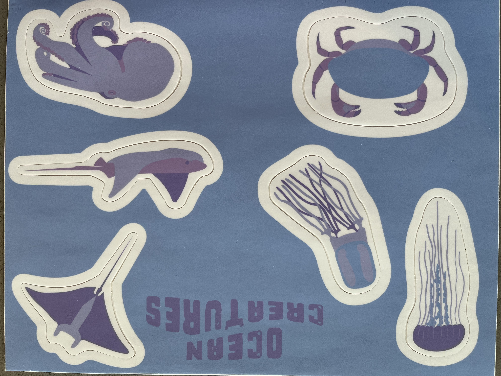
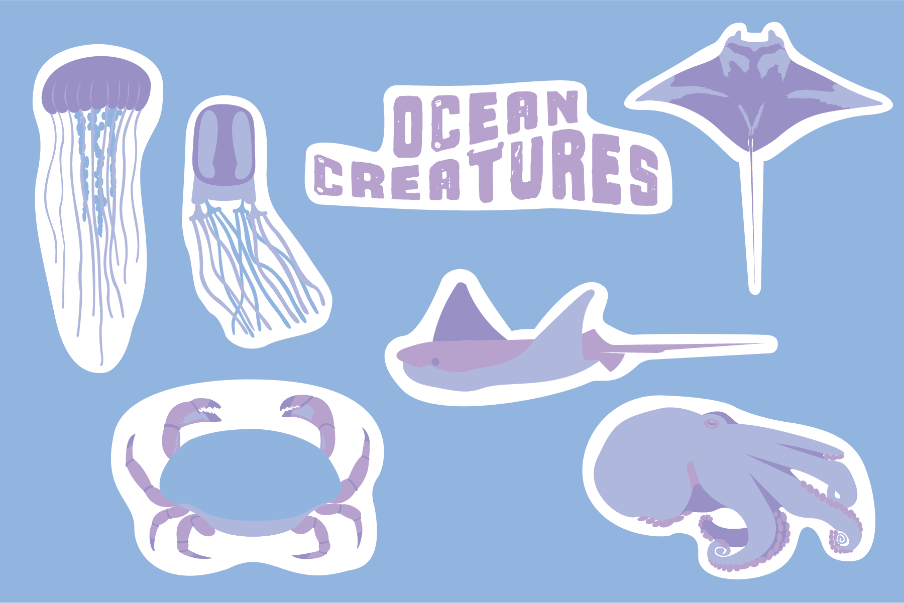
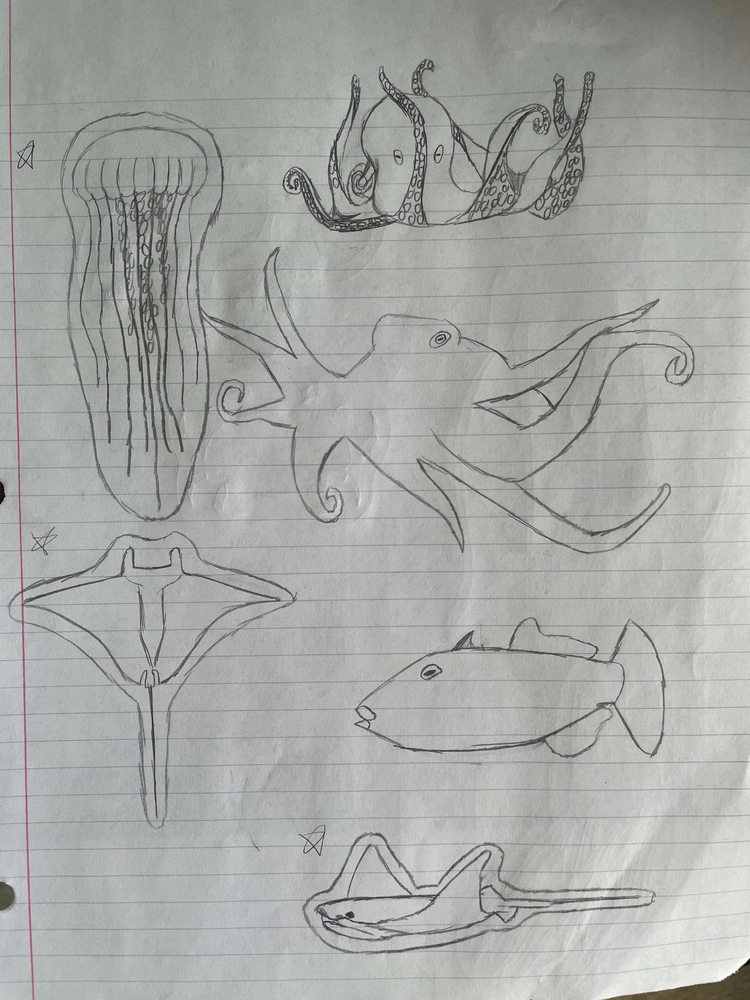
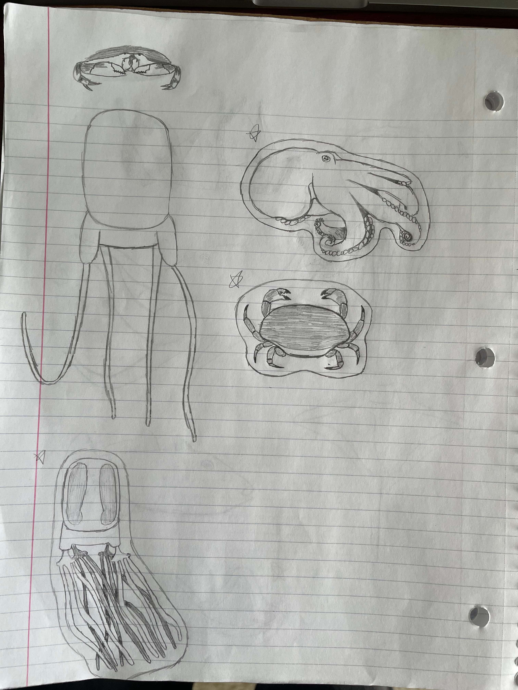

ART 202 — Digital Media Design I, Spring semester 2022, Adobe Illustrator, vinyl sticker sheet, 11x8 inches.
For this project, we were able to choose any theme (e.g., animals, vehicles) and then had to illustrate the theme into stickers. At the end of the project, we had to upload them to a website, such as stickermule, to get them printed. I had chosen an oceanic theme for this project. I felt that the animals had many dynamic features and interesting textures that could be represented in the illustration. Additionally, I had chosen to go with more monochromatic colors instead of physically accurate ones because it helped me get the animal features across without making them too complex.
   